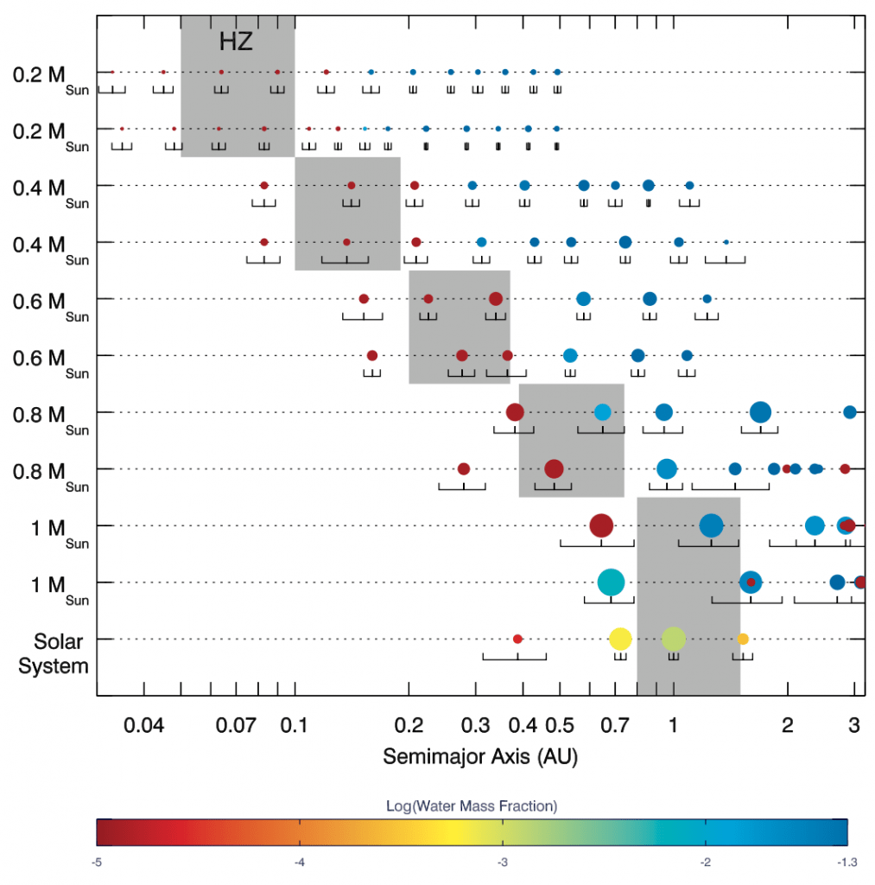

Title: A DECREASED PROBABILITY OF HABITABLE PLANET FORMATION AROUND LOW-MASS STARS
Authors: Raymond, Sean N.; Scalo, John; Meadows, Victoria S.
First Author’s Institution: Center for Astrophysics and Space Astronomy, University of Colorado; Member of NASA Astrobiology Institute.
Status: Published in The Astrophysical Journal 669:606-614, 2007 November 1, open access on the arXiv
1 Article Summary
1.1 Planet in the Habitable Zone might not have water.
1.2 Simulation Settings.
Figure1: Evolution of a simulation around a 0.6 M_sun star. Particle size scales with its mass and colors correspond to water content as shown by the colorbar below the figure. The HZ is shaded in the final panel of the simulation. Some water delivery occurred, indicated by the two water-rich embryos at 0.41 AU.
1.3 Planetary Formation and Water Delivery

Figure2: Final outcomes of 10 simulations, two for each stellar mass chosen, with the solar system for scale. As in Fig. 1, color represents water content, and particle size scales with the planet mass. The lines under each planet represent the radial excursion of a planet over its orbit( a(1-e)~a(1+e)); these values are averaged over the last 10 Myr of each simulation. The HZ is shaded for each stellar mass.
1.3 Formation Timescales
Figure3: Formation times of HZ planets in the simulations. Different symbols correspond to the time for a planet to reach a fraction (50%, 75%, or 90%) of its final mass. Shaded regions show estimates for the formation time of the Earth, derived from Hf / W isotopic measurements (e.g., Jacobsen 2005). Two dashed lines represent two analytical models.
2 Back of the envelope calculation
2.1 Question: Will the secular resonance induced by an outer giant planet occur at HZ during the planet formation and water delivery? And what are the ranges of the possible mass and semi-major axis of the giant planet?
This work did not include the giant planet in their simulation, neither did they consider the depletion of the protoplanetary disk, which is the obvious criticism. The giant planets on orbits exterior to the terrestrial region could introduce procession to the inner embryos. Once the apsidal precession rate of the embryos match that of the outer giant planet, they will experience the secular resonance and the eccentricities of embryos will be excited from the outside in, and therefore, enhance the collisions among embryos. With the disk depleting, the secular resonance could occur at the location from the outside in. In consequence, the existence of the outer giant planet may have a huge impact on HZ planets' formation by introducing the secular resonance. This work discussed the effects of giant planets in section 3.3 and concluded that the formation timescales of HZ planets in giant planet simulations were comparable to, or even slightly longer than, those with no giant planets, based on the eight additional simulations they performed. However they only tested the giant planet on a circular orbit at 1.3 AU for Neptune- and Jupiter-mass giant planets. So it is not a general conclusion. Here I want to do some mathematical analysis and scale analysis to draw a more general conclusion to answer the following questions. Will the secular resonance introduced by a giant planet occur at HZ during the planet formation and water delivery? And what are the ranges of the mass and semi-major axis of the giant planet?2.2 Solution Strategy
This is an N-body problem also considering the gravity of the disk, so there is no analytical solution but we can only perform a numerical simulation to investigate the evolution of the system. However, we could also simplify the condition by keeping the major factors but ignoring the minor factors, and then do some mathematical analysis to estimate the location and time of secular resonance occurring. Here is the basic idea that once the apsidal precession rate of the embryos matches that of the outer giant planet, they will experience the secular resonance. Also, some scaling analyses could allow us to easily adjust the parameters and draw a more general conclusion.2.2.1 Time of the Secular Resonance
Once the apsidal precession rate of the embryos match that of the outer giant planet, they will experience the secular resonance. Solving the perturbation function, we can get the precession rate and we can only consider the secular part($ g$), since only secular resonance is what we care about. The resonance condition should be $ g_{i} = g_{j}$ where $ g_{i} $ and $ g_{j} $ is the secular precession rate of embryos $ i$ and giant planet $ j$, respectively. Below the analysis is based on the equations from Nagasawa et al. 2005.Disk without depletion during the formation stage
In this paper, they did not consider the depletion of disk. Although they did not point it out, but their assumption must be that the timescale of the formation is much smaller than the depletion timescale of the disk. And I will test this assumption later in S 2.2.2. Here I just accept this assumption. In this case, the location of secular resonance won't evolve with time, and I can simply scale the location ($ r_R$) with the mass ($ M_j$) and semi-major axis ($ a_j$) of the giant planet.- precession rate of the embryos$ g_{i} $:
- due to the disk:
According to equation (13), the precession rate of embryo (i) introduced by the disk is:
$ g_{i,disk} \sim -Z_k[\frac{\pi G\Sigma(r_{i}) }{n_i r_{i}}]$
where $ Z_k, G$ are constant, and mean motion $ n_i \sim 1/P \propto r_{i}^{3/2} M_*^{-1/2}$, so
$ g_{i,disk} = C_1 \cdot r_{i}^{-1/2} M_*^{1/2} \propto r_{i}^{-1/2} M_*^{1/2} $
where $ C_1$ is a constant, $ r_i$ is the location of embryo $ i$ and $ M_*$ is the stellar mass.
-
- due to the giant planet:
According to equation(10), the precession rate of embryo (i) introduced by giant planet(j) is:
$ g_{i,j} = \frac{Gm_j\alpha_p b_{3/2}^{(1)}}{4n_i a_i^2max(a_i,a_j)}$
where $ G, b$are constant, $ a_i, a_j$ are the semi-major axis of embryos and giant planet separately, and $ \alpha = min( a_i,a_j)/ max(a_i,a_j)$. Doing scaling analysis, it can be rewritten as:
$ g_{i,j} = C_2 \cdot r_{i}^{1/2} M_*^{-1/2} r_j^{-2} m_j \propto r_{i}^{1/2}M_*^{-1/2}r_j^{-2}m_j$
where $ C_2$ is a constant, $ r_j$ is the location of giant planet $ j$ and $ M_j$ is the mass of the giant planet.
- precession rate of the giant planet$ g_{J} $:
- due to the disk:
For real, the giant planet could be massive enough to open a gap. Here we consider a simple case where no gap was formed. Since HZ is away from the giant planet, there should not be order of magnitude difference according to Fig2 and Fig3 in Nagasawa et al. 2005. So, the precession rate of giant planet introduced by the disk is the same as the embryos:
$ g_{j,disk} = C_3 \cdot r_{j}^{-1/2} M_*^{1/2} \propto r_{j}^{-1/2} M_*^{1/2}$
where $ C_3$ is a constant.
-
- The embryos can be considered massless bodies compared with the giant planet.
- Let $ g_{i} = g_{j}$:
$ g_{i,disk} + g_{i,j} = g_{j,disk}$
$ C_1 \cdot r_i^{-1/2} M_*^{1/2} + C_2 \cdot r_{i}^{1/2} M_* ^{-1/2} r_j^{-2} m_j=C_3 \cdot r_{j}^{-1/2} M_*^{1/2}$
For the convenience of calculations, we denote it as:
$ S_1 r_{i}^{-1/2} + S_2 r_{i}^{1/2} +S_3 = 0$
where $ S_1 = C_1 M_*^{1/2}; S_2 = C_2M_*^{-1/2} r_j^{-2} m_j; S_3 = -C_3 M_*^{1/2}r_{j}^{-1/2} $
Solve the equation and get $ r_R ^{1/2} = (-S_3 + \sqrt{S_3^2 -4 S_1 S_2})/2S_2$
where $ r_R$ is the location where secular resonance occurs.
- Secular resonance at HZ
This study is about the formation of HZ planet, so our aim is to determine whether the secular resonance could occur at HZ ($ r_R = r_{HZ}$) and give the range of the mass and semi-major axis of the giant planet required to achieve this.
2.2.2 Testing of Assumption: Formation timescale at HZ radius
A vital assumption for this analysis is that the surface density is constant during the formation stage, which requires the formation timescale for HZ planets is much larger than the disk depletion timescale. Observations suggest the disk depletion time scale is approximately from 1Myrs ~ 10Myrs (Muzerolle et al. 2010). Fig 5 in this paper show the formation timescale is comparable to or larger than 1M yrs, indicating this assumption is not tenable. But we learn that their simulation depends on some uncertain parameters of the disk. So we can adjust the parameter to check if it is possible that our assumption can be established. Here I apply the scaling analysis to relate the parameters to our assumption. Given that the disk model depend on stellar mass and we've already known the formation time of the Earth is about 30 Myrs, derived from Hf / W isotopic measurements (e.g., Jacobsen 2005), the basic idea is to scale the formation timescale for HZ planet with the stellar mass and compare it to our Earth's situation.- Scale HZ radius $ r_{HZ}$ with stellar mass:
- Mass-Luminosity relation: $ L_* \propto M_*^4$
- The location of HZ($ r_{HZ}$): HZ is defined by having the Earth-like insolation $ S_0 = \frac{L_*}{4\pi r_{HZ}^2}$.
- So $ r_{HZ} \propto L_*^{1/2} \propto M_*^2$
- Disk model: $ \Sigma(r_{HZ}) = \Sigma_1fZ(\frac{r_{HZ}}{1AU})^{-\alpha }(\frac{M_*}{M_{\bigodot}})^h$
- This is equation (1) in this paper and it shows the surface density of protoplanetary disks($ \Sigma $) scaled with heliocentric distance ($ r$). $ \Sigma_1, f,$ and $ Z$ are all parameters, so it can be scaled as $ \Sigma (r_{HZ}) \propto r_{HZ}^{- \alpha } M_*^h $.
- Substitute it with the scaled $ r_{HZ}$, $ \Sigma (r_{HZ}) \propto M_*^{-2\alpha +h} $
- Growth time: $ \tau_G \sim \frac{1}{v_{HZ}}{r_{HZ}} \times \Sigma(r_{HZ})$
- The growth time scales inversely with the product of the orbital frequency ($ \frac{v_{HZ}}{r_{HZ}} $) and the local surface density ($ \Sigma_{HZ}$).
- Orbital velocity ($ v_{HZ}$): According to Kepler's third law, $ v_{HZ}\propto ( \frac{M_*}{r_{HZ}})^{1/2} \propto M_*^{-1/2}$
- So $ \tau_G \sim M_*^{2\alpha - h +5/2}$
2.3 Quantitative Estimates & Data Gathering
2.3.1 Time of the Secular Resonance
Analytical Solution: $ r_R = [(-S_3 \pm \sqrt{S_3^2 -4 S_1 S_2})/2S_2]^2$
Figure 1*: Location of the secular resonance with stellar mass changing. The solid line represent the system with Jupiter-mass giant planet at different locations, while the dashed line represent the system with Neptune-mass giant planets. Different colors mark different location of the giant planet as shown in the legend.
- $ S_1 = C_1 M_*^{1/2}$;
- $ C_1 = Z_k * \pi G^{1/2} \Sigma_1 f Z$
- $ S_2 = C_2M_*^{-1/2} r_j^{-2} m_j$
- $ C_2 = \frac{\sqrt{G} b_{3/2}^{(1)}}{4 }$
- $ S_3 = -C_3 M_*^{1/2}r_{j}^{-1/2} $
- $ C_3 = Z_k * \pi G^{1/2} \Sigma_1 f Z$
- $ Z_k = 1.094$
- $ G = 39.5$
- $ \Sigma_1 = 6 * 1.125e-7$
- $ f = 1$
- $ Z =1$
- $ b_s^{(k)}(\alpha) = \frac{s(s+1)\cdots (s+k-1)}{1\cdot 2\cdot \cdots \cdot k} \alpha^k \times [1+\frac{s(s+k)}{1(k+1)}\alpha^2 +\frac{s(s+1)(s+k)(s+k+1)}{1 \cdot 2(k+1)(k+2)}\alpha^4+\cdots]$
- $ C_1 = 1.5 \times 10^{-5}$
- $ C_2 = 0.0024$
- $ C_3 = 1.5 \times 10^{-5}$
2.3.2 Testing of Assumption: Formation timescale at HZ radius
Figure2*: The formation timescale of the HZ planet. The different colors represent different disk parameters as shown in legend.
2.4 Conclusions & Reflection
2.4.1 Will the secular resonance induced by an outer giant planet occur at HZ during the planet formation and water delivery?
No, it won't happen. For $ \alpha_p = 0.1$, there is no solution for low-mass stars in some cases, because $ S_3^2 -4 S_1 S_2<0$ which is under root squared operator in our analytical solution. For example, there is no solution for $ M_*< 0.5$ in the case with $ r_j =1.3, m_j=Jupiter Mass$, and the existing solutions are all larger than 10 AU, which can not be located at the HZ. According to Figure 1*, all the existing solutions are larger than 10 AU, which means no secular resonance occurs in HZ. Our analytical solution is consistent with their simulations. To be honest, I did not check my calculations due to time limit, so I cannot guarantee my conclusion is solid. However, the methodology I think is applicable. The major concern of my analysis is how I treat $ \alpha_p $. More detailed analysis is needed if we want a tenable conclusion.2.4.1 Can we assume that the surface density is constant during the formation stage?
No. We can not conclude it is a sustainable assumption until we know more about the disk. Only if $ -2\alpha + h -5/2 <-4 $, this assumption can be applied to the star with a specific mass range. So we also need to review the literatures to check the range of the disk parameters ($ \alpha$ and $disk h$), and decide if they can satisfy the requirement. Conclusion: As the basic assumption is not tenable, our analysis could can not draw a sound conclusion. However, it also indicates that the simulations in this paper can not reflect the real evolution of the planetary system. What a wild conclusion! But it is not a strong statement but just some implications, because we apply many estimating or empirical scaling laws in our analysis (for example, the mass-luminosity relation), and their soundness need to be verified and discussed.Reference:
- Nagasawa, M., Lin, D. N. C., & Thommes, E.2005, ApJ, 635, 578
- Muzerolle J, Allen LE, Megeath ST, Hernandez J, Gutermuth RA. 2010. ´ Ap. J. 708:1107–18